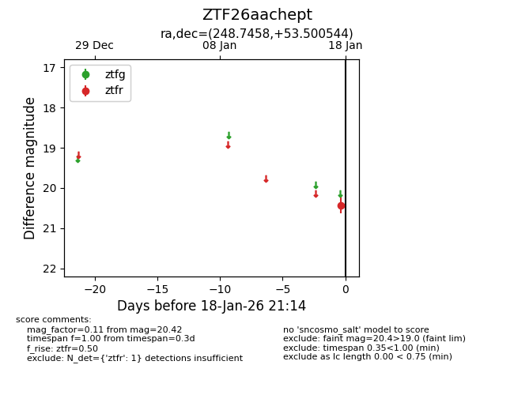
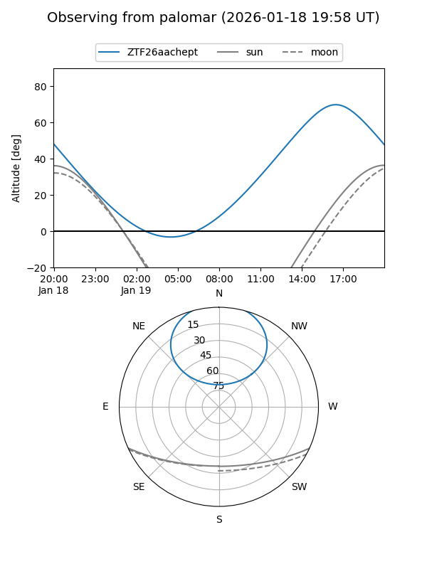

ZTF26aachept
Target ZTF26aachept at 2026-01-18 21:16
Aliases and brokers:
FINK: link
Lasair: link
ALeRCE: link
alt names
ZTF26aachept (ztf,fink_ztf)
Coordinates:
equatorial (ra, dec) = 248.7458,+53.50054
equatorial (HMS+DMS) = 16:34:59.00,+53:30:01.96
galactic (l, b) = (81.7712,+41.56297)
Flags:
Photometry:
last ztfr=20.42
1 ztfr detections
Lightcurve

Visibility


Additional plots